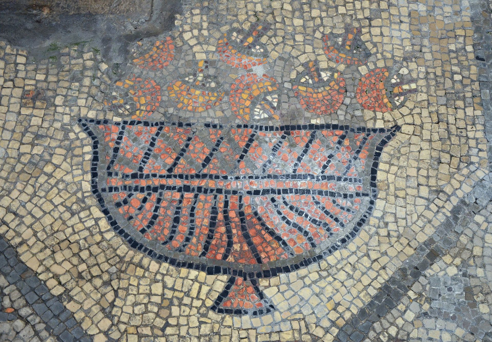

Soma
In 1968, R. Gordon Wasson proposed that A. muscaria was the soma talked about in the Rigveda of India, a claim which received widespread publicity and popular support at the time. He noted that descriptions of Soma omitted any description of roots, stems or seeds, which suggested a mushroom, and used the adjective hári "dazzling" or "flaming" which the author interprets as meaning red. One line described men urinating Soma; this recalled the practice of recycling urine in Siberia. Soma is mentioned as coming "from the mountains", which Wasson interpreted as the mushroom having been brought in with the Aryan migrants from the north. Indian scholars Santosh Kumar Dash and Sachinanda Padhy pointed out that both eating of mushrooms and drinking of urine were proscribed, using as a source the Manusmṛti. In 1971, Vedic scholar John Brough from Cambridge University rejected Wasson's theory and noted that the language was too vague to determine a description of Soma. In his 1976 survey, Hallucinogens and Culture, anthropologist Peter T. Furst evaluated the evidence for and against the identification of the fly agaric mushroom as the Vedic Soma, concluding cautiously in its favour. Kevin Feeney and Trent Austin compared the references in the Vedas with the filtering mechanisms in the preparation of Amanita muscaria and published findings supporting the proposal that fly-agaric mushrooms could be a likely candidate for the sacrament. Other proposed candidates include Psilocybe cubensis, Peganum harmala, and Ephedra.
Christianity
While far from widely accepted, philologist, archaeologist, and Dead Sea Scrolls scholar John Marco Allegro postulated that early Christian theology was derived from a fertility cult revolving around the entheogenic consumption of A. muscaria in his 1970 book The Sacred Mushroom and the Cross. This theory has found little support by scholars outside the field of ethnomycology. The book was widely criticized by academics and theologians, including Sir Godfrey Driver, Emeritus Professor of Semitic Philology at Oxford University and Henry Chadwick, the Dean of Christ Church, Oxford. Christian author John C. King wrote a detailed rebuttal of Allegro's theory in the 1970 book A Christian View of the Mushroom Myth; he notes that neither fly agarics nor their host trees are found in the Middle East, even though cedars and pines are found there, and highlights the tenuous nature of the links between biblical and Sumerian names coined by Allegro. He concludes that if the theory were true, the use of the mushroom must have been "the best kept secret in the world" as it was so well concealed for two thousand years.
